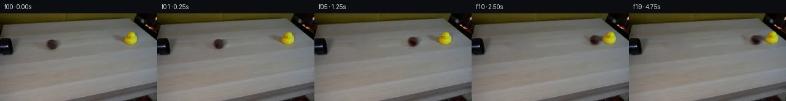
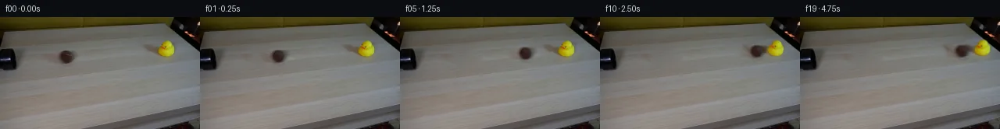
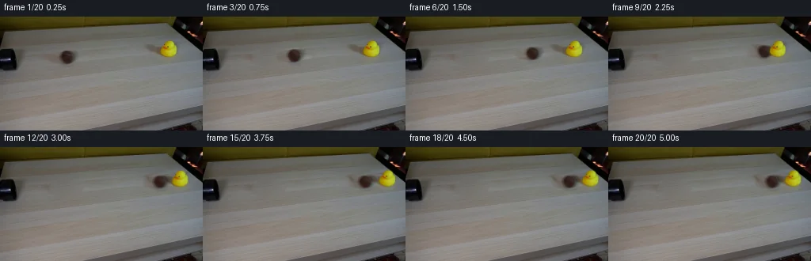
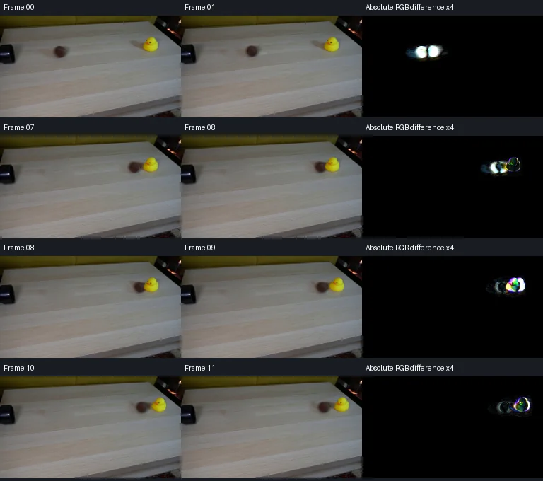

V0 · 初版
2026-11-04T19:29:44.525874+00:00 · RGB c184253ecf63
![]()
Observable Generation Trace
把最终像素视频、Harness 冻结的每轮候选、真实工具事件和 Agent 自述放在同一页。可观测证据与模型自述分开标记，避免把“模型说它检查过”误当成真实工具调用。
![首帧]()
Static locked-off single-shot with fixed frame throughout filmed with constant framerate in real-time. The scene shows a realistic scientific demonstration. The scene only contains the described setup and actions. A light beige coffee table with a small yellow rubber duck on it. A mustard yellow couch is in the background. There is a black pipe that points from the left side to the right side of the table. The brown tennis ball rolls straight out of the black pipe and hits the rubber duck.
首帧显示在左侧播放器初始画面。Track 权限、隔离和 tensor 一致性来自 run manifest，而不是 METHOD.md。
默认勾选初版和最终版；可选其他版本一起同步播放。仅检查图更新的连续重复快照已合并，回退旧视频仍保留为一次修订。
Observable events
来源：events.jsonl + run manifest
此 Track 禁止读取输出图片。逐轮预览由外部 Harness 自动冻结，只用于事后审计，生成 Agent 当时看不到这些页面。
Frozen candidates
每张图来自该 round 的真实 00 / 01 / 05 / 10 / 19 帧

pixels 44345e6ee2110698 · code 14134b59439271bb
--- previous/generate.py
+++ current/generate.py
@@ -0,0 +1,225 @@
+"""Source-pixel continuation: local plate repair, object matting and physical motion.
+All inspection is numeric. No network, models, reference imagery or rendering engine.
+"""
+from pathlib import Path
+import json, re, base64
+import numpy as np
+from PIL import Image, ImageDraw
+import cv2
+from scipy.ndimage import gaussian_filter, binary_fill_holes, distance_transform_edt, map_coordinates
+from scipy.sparse import lil_matrix
+from scipy.sparse.linalg import spsolve
+from artifact_io import save
+
+ROOT = Path(__file__).resolve().parent
+SRC = np.asarray(Image.open(ROOT / 'first_frame.png').convert('RGB'), dtype=np.float64)
+H, W = SRC.shape[:2]
+Y, X = np.mgrid[:H, :W].astype(float)
+
+
+def repair(mask):
+ """Dirichlet harmonic interpolation of RGB with copied local fine texture."""
+ locs = np.argwhere(mask)
+ ids = np.full((H, W), -1, int)
+ ids[mask] = np.arange(len(locs))
+ mat = lil_matrix((len(locs), len(locs)), dtype=float)
+ rhs = np.zeros((len(locs), 3))
+ for i, (y, x) in enumerate(locs):
+ mat[i, i] = 4
+ for dy, dx in ((-1, 0), (1, 0), (0, -1), (0, 1)):
+ yy, xx = y + dy, x + dx
+ j = ids[yy, xx]
+ if j >= 0:
+ mat[i, j] = -1
+ else:
+ rhs[i] += SRC[yy, xx]
+ out = SRC.copy()
+ out[mask] = spsolve(mat.tocsr(), rhs)
+ # Fine table texture comes from an adjacent unoccupied section of this frame.
+ residual = SRC - gaussian_filter(SRC, (1.1, 1.1, 0))
+ yy = np.minimum(Y.astype(int) + 27, H - 1)
+ grain = residual[yy, X.astype(int)]
+ feather = np.clip(distance_transform_edt(mask) / 3, 0, 1)
+ out += grain * feather[..., None] * .65
+ return out
+
+ball_hole = ((X-83.5)/23)**2 + ((Y-52.0)/12.5)**2 < 1
+# Measured broad duck shadow, native yellow bounce and entire silhouette.
+duck_hole = np.zeros((H, W), np.uint8)
+cv2.fillPoly(duck_hole, [np.array([[185,33],[203,27],[222,28],[226,39],
+ [225,56],[203,58],[192,47]], np.int32)], 1)
+duck_hole = duck_hole.astype(bool)
+PLATE = SRC.copy()
+for hole in (ball_hole, duck_hole):
+ repaired = repair(hole)
+ PLATE[hole] = repaired[hole]
+
+# Duck alpha is inferred from source chroma and hole-filled high-chroma interior.
+chroma = SRC[..., 0] - SRC[..., 2]
+plate_c = PLATE[..., 0] - PLATE[..., 2]
+core = binary_fill_holes((chroma > 115) & duck_hole)
+dist, nearest = distance_transform_edt(~core, return_indices=True)
+nearest_c = chroma[nearest[0], nearest[1]] - plate_c
+ad = np.clip((chroma-plate_c) / np.maximum(nearest_c, 90), 0, 1)
+ad *= (dist < 2.1) & duck_hole
+ad[core] = 1
+# Do not carry far chromatic shadow as part of the silhouette.
+ad[(chroma - plate_c < 12) & ~core] = 0
+ad = ad.astype(float)
+
+# Soft source silhouette for the ball; its low-contrast edge retains native blur.
+ab0 = np.clip((1 - (((X-84.2)/7.8)**2 + ((Y-50.8)/8.05)**2)) * 5 + .5, 0, 1)
+ab = gaussian_filter(ab0, .45) * ball_hole
+
+
+def separate(alpha, hole):
+ delta = (SRC - PLATE) * hole[..., None]
+ shadow = delta * (1-alpha[..., None])
+ foreground = PLATE + delta * (2-alpha[..., None])
+ return foreground, shadow
+
+DFG, DS = separate(ad, duck_hole)
+BFG, BS = separate(ab, ball_hole)
+# Do not rotate the illumination with the tennis-ball's texture.
+BLOW = gaussian_filter(BFG, (1.25, 1.25, 0))
+BTEX = BFG - BLOW
+
+
… diff truncated; 138 more lines …
pixels 768d0d232c059f88 · code e766de23c29a733a
--- previous/generate.py
+++ current/generate.py
@@ -82,7 +82,8 @@
BFG, BS = separate(ab, ball_hole)
# Do not rotate the illumination with the tennis-ball's texture.
BLOW = gaussian_filter(BFG, (1.25, 1.25, 0))
-BTEX = BFG - BLOW
+texture_core = np.clip((.85 - (((X-84.2)/7.8)**2 + ((Y-50.8)/8.05)**2))*8,0,1)
+BTEX = np.clip(BFG - BLOW, -10, 12) * texture_core[...,None]
def sample(arr, xx, yy):
@@ -204,9 +205,15 @@
assert np.array_equal(current,pixels[:,:,t].reshape(-1))
changes = np.any(frames != frames[0],axis=-1)
-assert not changes[:, :27].any()
-assert not changes[:, 76:].any()
+assert not changes[:, :25].any()
+assert not changes[:, :, :60].any()
+assert not changes[:, 65:].any()
assert np.array_equal(frames[-1],frames[-2])
+assert not (frames[-1,30:51,202:222,0].astype(int)-frames[-1,30:51,202:222,2].astype(int)>75).any()
+# Ball moves monotonically on one straight tabletop line, with no vertical bounce.
+assert np.all(np.diff(BX)>=0)
+baselines = np.array([r['ball_center'][1]+8.05*r['ball_scale'] for r in records])
+assert np.max(abs(baselines-(58.85-.065*(BX-84.2)))) < 1e-9
metrics = []
for t in range(1,20):
delta = abs(frames[t].astype(int)-frames[t-1].astype(int))pixels 768d0d232c059f88 · code e766de23c29a733a
No generate.py text change in this frozen round.
Final visual checks
Harness 保存的最终产物


Agent claims
以下文字由生成 Agent 撰写，不等同于工具证据
Inspected first_frame.png only with local Python and numeric RGB samples and connected-component measurements. No image Read/View tools were used. Coordinates below are zero-based in the 256 × 144 image, with y increasing downward.
Frame 00 is an exact pixel copy of the input. The first frame already captures the ball after emerging from the pipe; continue that motion immediately. Centers are approximate planning targets and may be refined numerically during implementation.
| Frame | Time (s) | Ball center x | Duck displacement x | Event |
|---|---|---|---|---|
| 00 | 0.00 | 84.3 | 0 | Exact source, ball beyond pipe |
| 01 | 0.25 | 99.8 | 0 | Straight rolling, texture rotates |
| 02 | 0.50 | 115.1 | 0 | Roll with mild tabletop friction |
| 03 | 0.75 | 130.3 | 0 | Continue on the same projected line |
| 04 | 1.00 | 145.3 | 0 | Continue |
| 05 | 1.25 | 160.1 | 0 | Continue |
| 06 | 1.50 | 174.8 | 0 | Approach duck |
| 07 | 1.75 | 189.3 | 0 | Last clear pre-impact frame |
| 08 | 2.00 | 197.0 | 0–1 | Ball reaches duck's left body; contact |
| 09 | 2.25 | 198.5 | 6 | Momentum transfer; duck slides right and tips slightly |
| 10 | 2.50 | 200.0 | 11 | Duck continues sliding and rocking |
| 11 | 2.75 | 201.3 | 15 | Duck slows, rocks back |
| 12 | 3.00 | 202.5 | 17.5 | Duck slides less and begins settling |
| 13 | 3.25 | 203.6 | 19 | Damped rocking |
| 14 | 3.50 | 204.5 | 20 | Both slow |
| 15 | 3.75 | 205.2 | 20.5 | Duck almost settled |
| 16 | 4.00 | 205.8 | 20.5 | Small final ball roll |
| 17 | 4.25 | 206.2 | 20.5 | Motion ceases |
| 18 | 4.50 | 206.4 | 20.5 | Stable final pose |
| 19 | 4.75 | 206.4 | 20.5 | Stable final pose |
Use only source pixels and local NumPy/SciPy/OpenCV/Pillow pixel operations. Reconstruct the small vacated object footprints with locally fitted tabletop color plus nearby source texture. Separate the duck's source color from its background using its measured chroma and retain its native shape/eye/beak. Warp the duck around its contact point to give a short damped rock after impact. Continue the ball using a source-derived textured sphere/warped source appearance, with rolling rotation and fixed light direction. Move source-derived soft shadows with both objects. Keep all pixels outside the swept object/shadow regions unchanged.
Save the generator, packed uint32 RGB tensor, 20 PNGs, inspection contact sheet, transition diagnostics, standalone HTML player, and honest method notes. Verify frame 00 equality, frame dimensions/count, RGB packing and PNG round trips, player delta reconstruction, and numerical motion/background invariants. Review outputs numerically; do not claim visual review.
This is a local source-pixel animation made with Python, NumPy, SciPy, OpenCV and Pillow. Inputs were only prompt.txt and first_frame.png. No external imagery, AI models, network access, rendering engines or subagents were used. The input and outputs were inspected using numeric RGB arrays, coordinate samples, color thresholds and numerical diagnostics. No image Read/View tools were used, and no visual review is claimed.
The source frame remains the static background. Only two small source footprints are repaired: the ball and its diffuse shadow (an elliptical neighborhood around x = 84, y = 52), and the duck with its upper-left cast shadow and base tint (a local polygon around x = 185–226, y = 27–58). Each footprint uses a four-neighbor harmonic RGB solve with the surrounding source colors as boundary conditions. Fine tabletop texture is copied from the same frame 27 pixels below the footprint, with a feathered weight of 0.65. The source pipe, couch, table edge and the rest of the scene remain stationary.
The duck's silhouette comes from the source's red-minus-blue chroma. A hole-filled high-chroma mask retains its dark eye; a distance-limited soft matte retains the yellow edge and orange beak. Source RGB provides the complete duck appearance. Its source-minus-repaired-background difference is algebraically split into a translated diffuse shadow and an independently transformed foreground. At the original pose this composite reproduces the input duck pixels exactly.
The ball uses a soft elliptical matte and its native brown pixels. A fixed low-frequency source color field supplies illumination; a bounded high-frequency residual supplies the texture. This residual is restricted to the interior of the source ball so that blurred silhouette edges cannot rotate into its center. Visible sphere normals are inverse-rotated using Rodrigues' formula around the projected rolling axis (0, 0.8, -0.6), then mapped back to the source texture. The hidden hemisphere uses the same mirrored/projected texture samples. This is a source-derived approximate textured sphere, not a full recovered 3D model. Bilinear sampling provides subpixel translation, texture projection, scale change and duck rotation.
The source already shows the ball outside the left pipe. Motion continues immediately from (84.2, 50.8). Its projected contact baseline is y = 58.85 − 0.065 × (x − 84.2), a single straight path on the table. Initial displacement is about 15.6 pixels per 0.25-second frame, decreasing slightly with friction. Its radius scale decreases continuously by about 3.8 percent as it follows the slight depth component of this path. Rolling texture angle is traveled distance divided by current radius.
Contact occurs around frame 08 (2.0 seconds, zero-based). The sampled ball displacement drops sharply during the impact interval, while the duck begins moving right. The duck slides a total of 20.5 pixels along the same projected tabletop direction, with a brief clockwise rock of at most 11 degrees and small damped return oscillations. The ball continues a slow residual roll to x = 206.4. Both are settled by frame 18, and frame 19 holds that pose. Motion positions and rocking are explicitly authored physically motivated samples; there is no rigid-body simulation or recovered material measurement.
The shadows translate on the tabletop. The duck rocks around its base independently of its shadow. Its small deformation on the contact frame and damped rotation represent the impact response. No new scene elements or camera motion are introduced.
generate.py: deterministic generator and built-in verification; run python generate.py from this workspace to recreate output.pixels.npz: key pixels, shape (144, 256, 20), dtype uint32, values packed as 0xRRGGBB.frames/00.png through frames/19.png: 20 RGB images, each 256 × 144, for 4 fps playback lasting 5 seconds.inspection.png: contact sheet for eight selected frames.transition_check.png: source/next/absolute-difference panels for transitions 00→01, 07→08, 08→09 and 10→11.index.html: standalone player with the first packed frame and exact delta packets for the remaining frames.OBSERVATION.md: numeric source measurements and event plan written before generation code..tmp/motion.json: actual per-frame motion values..tmp/validation.json: numerical validation results and transition metrics.All 20 saved PNGs were decoded and compared bit-for-bit with both the generated uint8 RGB frames and the uint32 tensor. All HTML delta packets were decoded and every reconstructed frame was compared against the tensor. Frame 00 exactly matches the decoded source image. The top 25 rows, the left 60 columns, and all rows from 65 downward are unchanged throughout; 32,064 of the 36,864 image positions remain identical to the source in every frame. The ball contact baseline is numerically collinear, its forward positions are monotonic, the original duck footprint has no leftover saturated duck pixels at the final pose, and the final two frames are equal. After revision, ball core RGB values were also checked numerically to avoid carrying source silhouette contrast into the rotating texture.
The contact sheet and transition sheet are provided as artifacts; they were not visually viewed. The animation is a deterministic 2D continuation using source pixels, local repair and approximate projected geometry. Physical timing and the hidden ball surface are inferred from the described action and first frame.